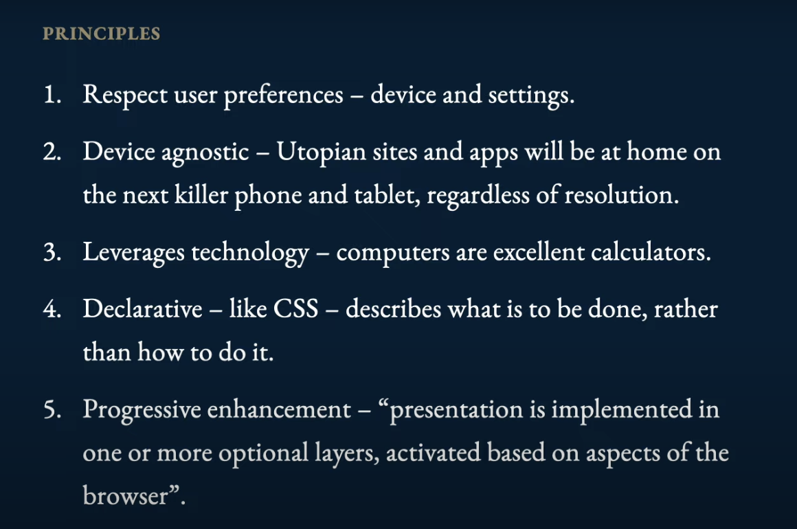

Fluid Percentage Based Design
Convert PX/PT based static images from Prototyping: PSDs/Figma/Sketch to fluid use everywhere progressively enhanced page / mobile / game resize.
If you are creating an atomic design start with Elegant Progressive Page Enahancement Core: "Molecules"
If you are creating an atomic design start with Elegant Progressive Page Enahancement Core: "Molecules"
Core Principles for Typography and Brand Standards
Guaranteed tested UI/UX design that holds up cross platform library channel that works "everywhere" starts with these basics. Understand the DOM/Viewport/Canvas Rendering in Background, Server, and Client. In addition to component Global and Scoped standards, Atomic NFTs and Gaming Web 3 Environments need the Frame/Viewport defined by Scaling and Typography Standards. It is not ok to use pts and pixels in design, design must be fluid and responsive.
I know this is a harsh judgement and applies to 95% of content out there. Take time to clean it up. Scaling and Enterprise Operations cross channel will benefit.
I know this is a harsh judgement and applies to 95% of content out there. Take time to clean it up. Scaling and Enterprise Operations cross channel will benefit.
